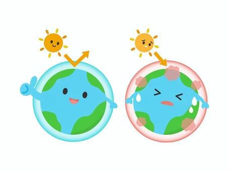
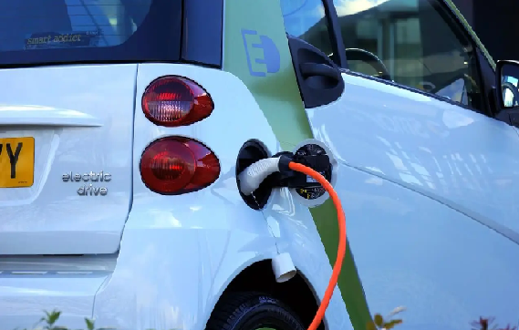

지구 온난화란?

태양의 복사에너지가 지구의 표면에서 반사되어
지구 밖으로 나갈 때 대기층에 온실가스가 다시 지표면으로 되돌아와
지구의 평균 온도가 상승하게 되는 현상입니다.
지구 온난화로 피해를 입는 북극곰
북극은 지구 전체의 기후 시스템을 조절하는 데 필수적인 역할을 하고
있으나
북극 증폭이라고 알려진 현상으로 인해 지구의 다른 지역보다 두 배
이상의 속도로 온난화가 진행되고 있습니다.
북극 증폭이란?
바닷물이 얼어서 생긴 얼음인 해빙이 물로 만들어진 얼음보다 더 빨리
녹아 생기는 현상
이로 인해, 해빙을 옮겨 다니며 사냥을 하는 북극곰이 더 빠르게 삶의
터전을 잃고 있습니다.
실제로 지구 온난화에 의해 바다얼음이 사라지면서
북극곰의 개채수는 지난 10년 새 절반 가까이 감소하였습니다.
지구 온난화를 해결하기 위한 우리들의 노력
1. 교통 수단 개선
